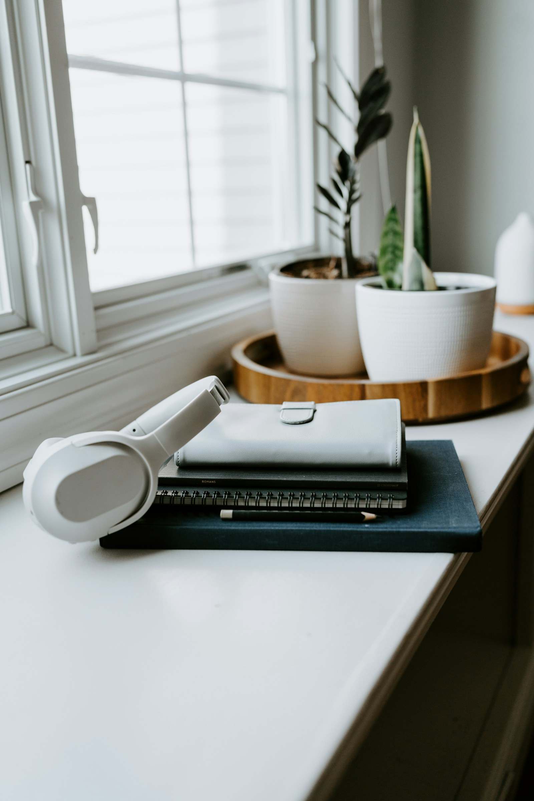
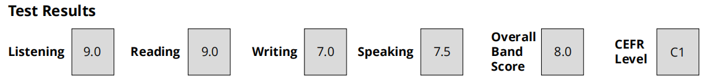

01Aa
Английский
От «знаю правило» к «умею использовать». Разбираем язык и сразу пробуем его в деле.
- Грамматика без заучивания вслепую
- Разговорная практика и словарный запас
- Помощь со школьной программой
АНГЛИЙСКИЙ И МАТЕМАТИКА · ОНЛАЙН
Не просто решить задание, а разобраться.
Занятия один на один, где можно спрашивать,
ошибаться и двигаться в своём темпе.

Вопросы — это
часть учёбы.
01 / ЧТО БУДЕМ ИЗУЧАТЬ
От «знаю правило» к «умею использовать». Разбираем язык и сразу пробуем его в деле.
Находим, где потерялась логика, и собираем её заново. От базовых тем до самостоятельного решения.
02 / КАК ПРОХОДЯТ ЗАНЯТИЯ
Урок строится вокруг того, что нужно именно вам. Если тема не даётся — меняем объяснение, а не повторяем его громче.
Обсуждаем цель и смотрим, что уже получается, а что вызывает вопросы.
Короткое объяснение, понятный пример и практика с обратной связью.
Закрепляем тему и замечаем, какие задачи теперь можно решить без подсказки.
ПОПРОБУЕМ ПРЯМО СЕЙЧАС?
Одно задание — чтобы почувствовать подход.
Если ошибётесь, разберём почему.
Выберите подходящее слово
Подсказка: действие повторяется каждый день.
03 / ДАВАЙТЕ ЗНАКОМИТЬСЯ
IELTS 8.0Мой результат экзамена по английскому

Преподаю английский и математику. Мой опыт — это частные занятия и образовательные волонтёрские проекты.
Сам продолжаю учиться, участвую в образовательных инициативах и развиваю BilOpportunities. Поэтому мне близка простая мысль: знания становятся полезными, когда понимаешь, что с ними делать.
На занятиях можно сказать: «Я не понял».
С этого часто начинается самое важное.
ЕЩЁ ПАРА ВОПРОСОВ
Да. Сначала разберёмся, какие темы вызывают трудности, и начнём с необходимой базы.
По видеосвязи, с разбором примеров и совместной практикой. Удобную платформу и материалы согласуем перед началом.
Стоимость, длительность и расписание обсуждаются перед началом занятий с учётом предмета и вашей задачи.
НАЧНЁМ С ВАШЕЙ ЦЕЛИ
Что хочется наконец понять?
Расскажите немного о себе и своей задаче.